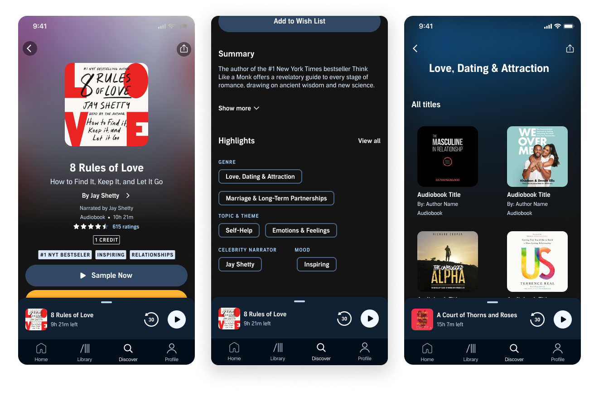
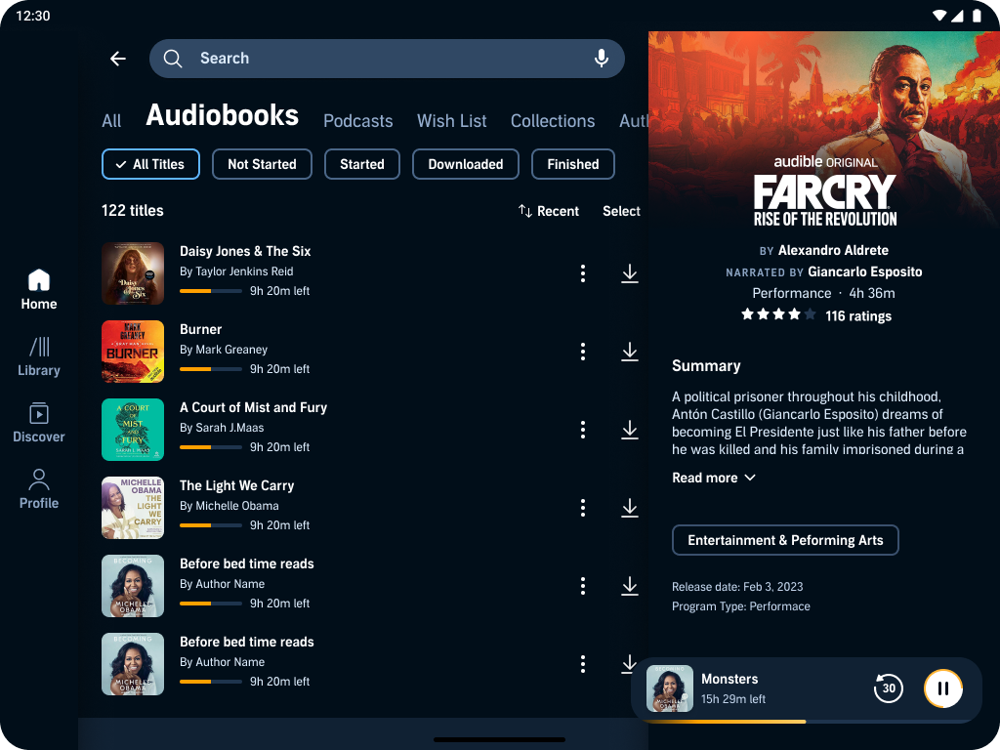
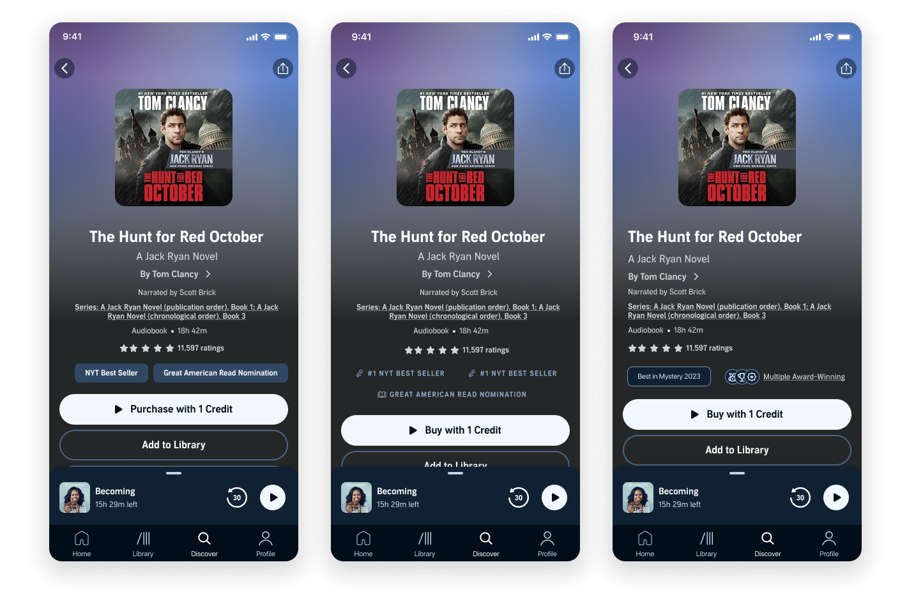

Case Study
Audible
Redesigning the internal content metadata pipeline at Amazon's Audible — transforming how 500K+ audiobook titles are ingested, enriched, and surfaced to millions of listeners worldwide.
Overview
Audible's content catalog was growing faster than the internal tools could handle. The metadata pipeline had been built incrementally over years and was struggling under the weight of 500K+ titles. Content ops teams spent 40% of their time on manual data cleanup. A title with bad metadata is effectively invisible to listeners. I was brought in to redesign the operator experience from the ground up.
A title with bad metadata is effectively invisible to listeners. The pipeline was broken. The cost was compounding daily.

Research & Discovery
Embedded Research
Six weeks inside the operation
I spent the first 6 weeks embedded with the content operations team — shadowing their workflows, auditing the existing tooling, and mapping the end-to-end data flow from publisher submission to customer-facing product page.
The pipeline touched 5 distinct teams: publisher relations, content ingestion, editorial curation, quality assurance, and localization. Each had developed shadow processes invisible in the official workflow documentation. Five systemic failures surfaced:
- Operators toggled between 7 different tools to process a single title — no unified view existed
- Validation rules were inconsistent across markets — titles passed QA in one region and failed in another
- Batch operations were essentially impossible — every title required individual attention
- The error resolution workflow had no state tracking — operators couldn't tell if an issue was being addressed
- Institutional knowledge lived in people's heads, not in the system

Navigational touchpoint mapping — 5 teams, 7 tools, zero shared state
PDP Tags Audit
400 labels. No hierarchy. No inheritance.
Audible's existing tag taxonomy contained over 400 loosely defined labels with no consistent hierarchy or inheritance model. A full audit mapped each tag to a structured L1–L4 world tree, surfacing gaps and redundancies across genre, theme, and mood dimensions.
The audit became the foundation for the smart validation engine — rules that understand context, not just field completeness.

Pain point synthesis — tag taxonomy structured into an L1–L4 world tree
"Designing for internal tools at scale taught me that operator efficiency compounds. A 7-minute improvement per title across 500K titles per year translates to thousands of hours reclaimed."
— Reflection on the Audible engagement
Design Process
Unified Title View
7 tools collapsed into 1 screen
The first intervention was consolidating the 7-tool workflow into a single "title detail" view. I designed a tabbed interface that brought metadata, audio assets, editorial notes, validation status, and publication history into one screen — reducing context-switching by 80%.
I worked with engineering to surface validation results inline rather than in separate reports. Each metadata field shows its validation state in real-time, with contextual guidance for resolution. Rules are market-aware — operators see only the requirements relevant to their target region.

Unified title view — metadata, validation, and publication history in one place
Batch Processing
The single most-requested feature
For bulk operations — re-categorization, narrator corrections, series reordering — I designed a spreadsheet-inspired batch editor with preview, undo, and dry-run capabilities. Operators can see before/after at scale before committing changes that affect hundreds of titles simultaneously.
To address institutional knowledge loss, I embedded contextual guidance directly into the interface — inline help, decision trees for ambiguous categorization, and "last edited by" attribution that lets operators learn from each other's decisions.

Batch editor — dry-run, preview, and undo before committing at scale
The Solution
Consolidate information. Automate the repeatable. Surface errors before they reach customers.
Pipeline dashboard — real-time ingestion volume, error rates, and SLA compliance
60%
Reduction in processing time per title (12 min → under 5)
40%
Fewer metadata errors reaching the customer-facing catalog
3×
Increase in batch processing throughput, enabling faster catalog expansion
78
Operator Net Promoter Score — up from 23 before the redesign
What I Learned
Reflection
Internal tools deserve the same rigor as consumer products
The ROI is often higher because the usage is daily and mandatory. When you improve an operator's workflow by 7 minutes per title across 500K titles per year, the math is undeniable.
The patterns I established — the unified title view and validation engine — were later adopted by two other Amazon internal tools teams as reference implementations. The best design systems outlive the projects that create them.
Shipped globally across all Audible markets — now the standard for content operations
Get in Touch
Like what
you see?
Let's talk about your next project.